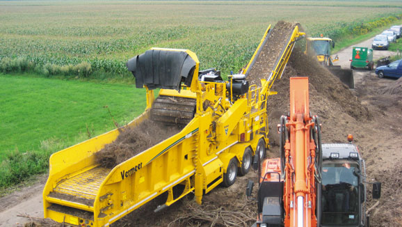
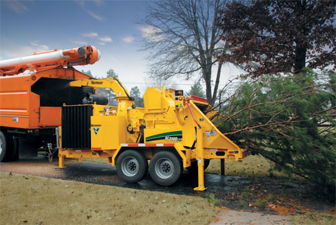

Проанализируем возможные варианты использования щепы с учётом вашей локации
Наши машины предназначены для производства щепы, расчистки территории от деревьев
Измельчение деревьев, измельчение пней, переработка древесины в щепу (топливная или технологическая), расчистка территории от древесины, пней и кустарника на корню.
Получите экономическое обоснование нашей технологии
Оставьте свои контактные данные, наш эксперт позвонит в течение 30 минут и поможет подобрать машину, обеспечущую максимальную рентабельность разработки вашего карьера
-
1
Окупаемость

Полностью окупается в кратчайшие сроки
-
2
Расходы
Низкие эксплуатационные расходы
-
3
Ликвидность
Самая высокая ликвидность на вторичном рынке
-
4
Ресурс

Самый большой ресурс эксплуатации
Горизонтальный измельчитель
Оборудование измельчает древесину (горбыль, баланс) порубочные остатки, выкорчеванные пни с землей и другие древесные материалы в топливную или технологическую щепу требуемой фракции.
Видео
Горизонтальный измельчитель
Оборудование измельчает древесину (горбыль, баланс) порубочные остатки, выкорчеванные пни с землей и другие древесные материалы в топливную или технологическую щепу требуемой фракции.
Смотреть модельный ряд
Прочность конструкции и разнообразие конфигураций горизонтальных измельчителей производства корпорации Vermeer делает их пригодными для крупномасштабных операций по расчистке территорий, переработке коммунально-бытовых (древесных) отходов и приготовлению компоста. Измельчители могут использоваться с подающими столами различной длины, имеют большой диапазон доступных мощностей, запатентованную режущую систему с дуплексным (молотковым) барабаном и ограничители выбрасываемого материала(TOD), предназначенные для сокращения числа выбрасываемого материала.
-
01
Управляемые дистанционно измельчители на гусеничном ходу обеспечат удобство и мобильность на рабочей площадке.
-
02
Запатентованная режущая система с дуплексным барабаном имеет двусторонние молотки и наконечники, что упрощает техническое обслуживание и практически удваивает их срок службы.
-
03
Множество доступных конфигураций сит поможет максимально увеличить производительность, сохранив при этом технические требования к размеру конечного продукта.
Размер готовой щепы можно изменять: от микрощепы, которая используется для производства древесных топливных гранул, и до крупной щепы, которая отвечает стандартам систем питания электрогенераторных станций.
Существуют как мобильные версии с дизельным двигателем, которые подходят для работы на открытом пространстве, так и версии с электрическим двигателем, которые не имеют выхлопа вредных веществ и подходят для работы в закрытых помещениях, например на заводе.
Бункерный измельчитель
Предназначены для переработки пней, порубочных остатков, а также больших объемов древесного мусора для производства мульчи, топливной и технологической щепы. Идеальное решение по утилизации древесного мусора на полигонах ТБО
Видео
Бункерный измельчитель
Предназначены для переработки пней, порубочных остатков, а также больших объемов древесного мусора для производства мульчи, топливной и технологической щепы. Идеальное решение по утилизации древесного мусора на полигонах ТБО
Смотреть модельный ряд
Конструкция приемного бункера измельчителя диаметром до 4 х метров, позволяет повысит эффективность переработки древесины до максимума. Бункерные измельчители Vermeer также могут быть оснащены грейферным погрузчиком (дополнительное оборудование) и уникальным набором биосит, которые позволяют эффективно пропускать через них не древесные биомассные материалы, такие как сено не ухудшая при этом качество конечного продукта.
-
01
Патентованная режущая система с дуплексным барабаном обеспечивает оптимальные рабочие характеристики и упрощает техобслуживание.
-
02
Патентованная система ограничения зоны выброса (TORS) сокращает количество и дальность разброса вылетающего материала.
-
03
Размер готовой щепы можно изменять: от микрощепы, которая используется для производства древесных топливных гранул, и до крупной щепы, которая отвечает стандартам систем питания электрогенераторных станций.
Существуют как мобильные версии с дизельным двигателем, которые подходят для работы на открытом пространстве, так и версии с электрическим двигателем, которые не имеют выхлопа вредных веществ и подходят для работы в закрытых помещениях, например на заводе.
Измельчитель целых деревьев
Оборудование для производства топливной или технологической щепы прямо на делянке.
Видео
Измельчитель целых деревьев
Оборудование для производства топливной или технологической щепы прямо на делянке.
Смотреть модельный ряд
По мере ускорения процесса использования возобновляемых видов топлива правительства и отрасли промышленности начинают осознавать преимущества использования древесной щепы в качестве материала для выработки тепла и электроэнергии. Выпустив на рынок измельчитель целых деревьев, корпорация Vermeer предлагает своим заказчикам мощное решение для производства древесной щепы из целых деревьев. Для заготовителей и транспортировщиков леса измельчители целых деревьев предоставляют превосходную возможность увеличение прибыли, за счет использования всех частей дерева. Даже древесные отходы, которые образуются при прореживании леса, теперь могут быть собраны и измельчены, чтобы за их счет сгенерировать дополнительный источник дохода.
Барабан, способный производить микро- или макрощепу. Измельчитель целых деревьев Vermeer способен производить материал различных размеров, от микрощепы, которая используется для производства древесных топливных гранул, и до крупной щепы, которая отвечает стандартам систем питания электрогенераторных станций.
Измельчитель срубленных ветвей
Мобильные, прицепные измельчители Vermeer-оборудование, используемое для уменьшения объёма и удобства транспортировки спиленных ветвей и древесины, а также для удобства дальнейшего использования в качестве покрытия газонов, садовых и парковых зон мульчей.
Видео
Измельчитель срубленных ветвей
Мобильные, прицепные измельчители Vermeer-оборудование, используемое для уменьшения объёма и удобства транспортировки спиленных ветвей и древесины, а также для удобства дальнейшего использования в качестве покрытия газонов, садовых и парковых зон мульчей.
Смотреть модельный ряд
Измельчители срубленных ветвей Vermeer настолько надежны, что не только выдерживают ежедневную работу, но и превосходят все ожидания. Каждая машина обладает исключительными характеристиками, обеспечивающими легкость в управлении, высокую эффективность и безопасность оператора. Кроме того, наши машины легко обслуживать и транспортировать, что делает их особенно привлекательными для арбористов, обслуживающих организаций и мелких лесозаготовительных компаний, пунктов проката и всех, кто нуждается в переработке древесины, отходов лесопиления и других древесных отходов малых и средних диаметров.
Мульчер
Мульчер-оборудование, предназначенное для измельчения древесины, пней и кустарника на корню. Мульчер - выполняет работы на поверхности земли - валка и измельчение древесно-кустарниковой растительности, измельчение порубочных остатков
Видео
Мульчер
Мульчер-оборудование, предназначенное для измельчения древесины, пней и кустарника на корню. Мульчер - выполняет работы на поверхности земли - валка и измельчение древесно-кустарниковой растительности, измельчение порубочных остатков
Смотреть модельный ряд
Мульчеры Vermeer предлагают эффективные решения для ваших задач по расчистке площадей от деревьев, древесно-кустарниковой растительности и измельчению порубочных остатков. Расчистки и расширению коридоров под линии электропередач, нефте-газопроводы, автомобильные и железнодорожные пути. Усиленные элементы конструкции и ответственные узлы с большим запасом прочности обеспечивают высокую надежность и долговечность. Защищенная ходовая часть, эффективный дизельный двигатель и мощная гидравлическая система позволяют работать с максимальной производительностью даже в самых суровых условиях.
-
01
Надежная гидравлическая система рассчитана на работу ниже номинальной мощности для увеличения срока службы гидравлических компонентов по сравнению с конкурентными агрегатами.
-
02
Запатентованное строение корпуса мульчера, помогает направлять измельченный материал под постоянным углом, независимо от положения мульчерной фрезы.
-
03
Просторная кабина оператора с удобным сиденьем, эргономичными джойстиками управления и оптимальной областью обзора, поддерживаемой стандартной камерой заднего вида позволяют оператору сосредоточиться на работе.
-
04
Доступ к моторному отсеку через две сервисные двери позволяют оперативно обслуживать узлы и механизмы трактора.
-
05
Сбалансированный ротор с ограничивающими дисками позволяет контролировать глубину измельчения, а варианты сменных резцов-настроиться под техническое заданию заказчика.
-
06
В зависимости от стабильности грунта, операторы могут выбрать манеру работы и движений на тракторе благодаря широким металлическим гусеницам(опция) с низким давлением (LGP) на грунт.
Измельчитель пней
Габаритные измельчители пней, как на колёсном, так и на гусеничном ходу, Vermeer измельчают и полностью удаляют пни без корчевания и повреждения почвы.
Видео
Измельчитель пней
Габаритные измельчители пней, как на колёсном, так и на гусеничном ходу, Vermeer измельчают и полностью удаляют пни без корчевания и повреждения почвы.
Смотреть модельный ряд
С тех пор, как в 1950-х годах корпорация Vermeer изобрела измельчитель пней, их удаление перестало быть изнурительной, требующей много времени, рутинной работой. Благодаря эксклюзивной системе AutoSweep® от Vermeer, пни просто стираются с лица земли – проход за проходом. Прочны, надежны и просты в эксплуатации; пригодны для древесины практически любой твердости.
Мини-погрузчики
Широкий спектр навесного оборудования, габаритные размеры, возможность выполнения огромного количества задач делают мини-погрузчики Vermeer уникальными в своем классе.
Видео
Мини-погрузчики
Широкий спектр навесного оборудования, габаритные размеры, возможность выполнения огромного количества задач делают мини-погрузчики Vermeer уникальными в своем классе.
Смотреть модельный ряд
Получите дополнительную прибыль после окончания работ
В зависимости от перерабатываемого древесного материала и возможности контроля фракции щепы на выходе можно получить или топливную или технологическую щепу
Как можно распорядиться щепой:
-
Продать агрегатору биотоплива
-
Продать производителям
-
Использовать ее в качестве мульчирования почвы
-
Использовать для производства компоста
Мы разработаем максимально рентабельный план сбыта щепы:
-
Анализ локации
-
Анализ вариантов
Сделаем сравнительный анализ вариантов
-
Выбор
Выберем наиболее выгодные для вас
-
Поиск
Найдём произодителей и агрегаторов, которые будут готовые купить щепу
-
Предложение решений
Предложим готовые решения для вашего проекта
Оставьте контактные данные и наш специалист рассчитает максимально эффективный вариант использования или сбыта щепы от измельченной древесины
Мы бесплатно разработаем полный план для того, чтобы вы получили дополнительную прибыль
Мульчер FT300
Когда требуется расчистить территорию от деревьев и кустарника на корню - от подготовки просек для трубопровода, кабеля, ЛЭП до заброшенных сельхоз полей, расчистка от последствий пожаров, ветровалов и многого другого – обратите внимание на лесной трактор FT300 с мульчерной фрезой от Vermeer. Созданный с учетом требований рынка, надёжности и удобства обслуживания, лесной трактор Vermeer готов приступить к выполнению задачи.
Горизонтальный измельчитель HG4000
Городские организации, занимающиеся сбором и переработкой отходов, изготовители пеллет и лесопильные предприятия, а также заготовители компоста по достоинству оценят нацеленные на удешевление эксплуатации качества нового горизонтального измельчителя HG4000. Среди преимуществ — дизельный двигатель FPT Tier III мощностью 445 л.с., конструкция которого обеспечивает большую экономию топлива по сравнению с двигателями аналогичной мощности, используемыми для такого же назначения.
Горизонтальный измельчитель HG4000TX
Поручите тяжелую работу самоходному горизонтальному измельчителю HG4000TX. Установленный на гусеницы шириной 60 см с двойными грунтозацепами, имея большой клиренс и герметичные катки, он легко проходит на удаленные лесные участки. Герметичный моторный отсек способствует снижению шума позволяя работать в населённых пунктах. Функция автореверса вентилятора охлаждения системы ОЖ и гидравлической системы снижает вероятность перегрева оборудования и засорению радиаторов охлаждения. Сверх широкий (122 см) V-образный разгрузочный транспортер позволяет без потерь выгружать переработанный материал.

Горизонтальный измельчитель HG6000
Повышайте эффективность переработки древесных отходов при помощи горизонтального измельчителя HG6000. Конструкция седельного или сцепного устройства обеспечивает высокую мобильность на площадке переработки, а аутригеры повышают устойчивость, низкое давление на грунт. Современная система беспроводного дистанционного управления позволяет управлять измельчителем с расстояния до 90 м. Высокий и широкий приемный стол позволяет совершать боковую загрузку объёмного материала.
Горизонтальный измельчитель HG6000TX
Мощный,самоходный гусеничный измельчитель, способный, благодаря гусеницам шириной 50 или 60 см с двойными грунтозацепами, добираться до самых удаленных бездорожных лесных объектов. Большой клиренс и герметичные катки предотвращают скопление материала в ходовой части. Современная система беспроводного дистанционного управления позволяет управлять машиной с расстояния до 90 метра.
Горизонтальный измельчитель HG8000
Самый мощный горизонтальный измельчитель Vermeer - HG8000 легко справляется даже со стволами большого диаметра и пнями. Нет необходимости уменьшать их до определенного размера – это чудо из мира машин обладает самым большим в классе приёмным отверстием для подачи материала и оснащено двигателем CAT Tier 2 мощностью 125 л.с. Сдвоенный планетарный привод подающего валика подает материал в барабан с огромной эффективностью. Сверхширокий разгрузочный транспортер позволяет выгружать переработанную древесину в требуемое место, не замедляя процесс измельчения отходов.
Горизонтальный измельчитель HG8000TX
Самоходный гусеничный горизонтальный измельчитель HG8000TX корпорации Vermeer имеет самое большое в своем классе приёмным отверстием для материала, позволяя повысить производительность и расширить возможности применения. Благодаря двигателю CAT Tier 2 мощностью 1 125 л.с., этот агрегат легко перерабатывает деревья большого диаметра, снесённые деревянные дома и конструкции. Кроме того, его инновационная конструкция, включает ряд функций, позволяющих сократить рассыпание материала и время на уборку площадки.
Агрегат HG8000TX оснащен гусеничным шасси с двойными или тройными грунтозацепами шириной 70 см. HG8000TX создан для выполнения тяжелых работ и обеспечивает высокую производительность.

Горизонтальный измельчитель HG4000E
Если переработку сырья в стационарном режиме планируется осуществлять с помощью электрической энергии, то корпорация Vermeer обладает необходимым оборудованием и опытом для удовлетворения ваших потребностей. Стационарный горизонтальный измельчитель HG4000E оснащается электрическим двигателем WEG мощностью 373 кВт, который приводит в действие рубильный или молотковый барабан. Благодаря возможности настройки плавного пуска, управления с панели, а также благодаря специальным конструктивным особенностям корпорации Vermeer, измельчитель HG4000E обладает функциями, необходимыми для эффективной переработки древесины.
Горизонтальный измельчитель HG6000E
Стационарный горизонтальный измельчитель HG6000E оснащается двумя электрическими двигателями WEG общей мощностью 522 кВт, которые приводит в действие рубильный барабан. Благодаря возможности настройки плавного пуска, управления с панели, а также благодаря специальным конструктивным особенностям корпорации Vermeer, измельчитель HG6000E обладает функциями, необходимыми для эффективной переработки древесины.
Возможность установки молоткового барабана или ножевого барабана, замена экранов контроля качества щепы под технические задания заказчика делают HG6000E самым мощным и эффективным оборудованием по переработке древесины.
Бункерный измельчитель TG5000
Бункерный измельчитель TG5000 от Vermeer мощное оборудование с двигателем в 540 л.с. с возможностью установки грейферного захвата для оперативной и мобильной подачи материала. Диаметр бункера у входного отверстия 3,7 метра позволяет перерабатывать объёмный древесный материал на примере снесённых деревянных домов и конструкци. С молотковым барабаном нового поколения серии Duplex Drum III, TG5000 готов для работы на выкорчеванных пнях с землёй с минимальными затратами на техническое обслуживание.
Бункерный измельчитель TG7000
Бункерный измельчитель TG7000 — это сочетание новейших технологий и мощности, предназначенное для выполнения крупномасштабных работ по расчистке территории и переработке органических и древесных отходов. С высокой скоростью перерабатывает объёмные древесные отходы. Молотковый барабан Vermeer сводит к минимуму работы по техобслуживанию, электронное управление «мокрой» муфтой отбора мощности при необходимости автоматически ограничивает крутящий момент, патентованная система с 20 статичными молотками, опциональная кабина с кондиционером и грейферным захватом делают TG7000 машиной, управляемой одним человеком, снижает трудозатраты и повышает производительность.

Бункерный измельчитель TG9000
Когда вам требуется больше мощности для крупномасштабных работ по измельчению древесных отходов, TG9000 – это идеальный выбор. С целью защиты двигателя путем ограничения крутящего момента «мокрая» муфта отбора мощности с передаточным числом 2:1 в измельчителе TG9000 управляется электроникой. Измельчитель TG9000 обладает самым большим в отрасли рабочим отверстием при внутреннем диаметре бункера 3,4 м. Патентованная дуплексная барабанная режущая система (Duplex Drum) Series II обеспечивает оптимальные рабочие характеристики и упрощает техобслуживание.
Бункерный измельчитель TG5000E
Если переработку сырья в стационарном режиме планируется осуществлять с помощью электрической энергии, то корпорация Vermeer обладает необходимым оборудованием и опытом для удовлетворения ваших потребностей. Бункерный измельчитель TG5000E оснащен электродвигателем мощностью 373 кВт, который приводит в действие рубильный барабан. Благодаря возможности настройки плавного пуска на панели управления, а также благодаря специальным конструктивным особенностям корпорации Vermeer, таким как конструкция молоткового барабана, экранов контроля фракции щепы и расположенная под дробилкой непрерывная конвейерная система – измельчитель TG5000E обладает функциями, необходимыми для эффективной переработки древесины.
Бункерный измельчитель TG7000E
Следующий помощник в переработке сырья в стационарном режиме с помощью электрической энергии бункерный измельчитель TG7000E. Он оснащен двумя электрическими двигателями, которые суммарно обеспечивают измельчителю мощность 746 кВт. Благодаря возможности настройки плавного пуска на панели управления, а также благодаря специальным конструктивным особенностям корпорации Vermeer, таким как конструкция молоткового барабана, экранов контроля фракции щепы и расположенная под дробилкой непрерывная конвейерная система – измельчитель TG5000E обладает функциями, необходимыми для эффективной переработки древесины.
Измельчитель пней SC30TX
Ориентированный на обеспечение легкости в эксплуатации гусеничный измельчитель пней SC30TX компактной конструкции оснащен интуитивно-понятными органами управления, минимальным количеством узлов, требующих сервисного обслуживания, и обладает производительностью, достаточной для выполнения необходимого объема работ. Усовершенствованная конструкция системы определения присутствия оператора сейчас имеет усиленную наружную поверхность с повышенной износоустойчивостью и более современным внешним видом. Удобная в управлении система рычага обеспечивает дополнительный диапазон настроек чувствительности и предназначена для лучшей защиты оператора.
Измельчитель пней SC40TX
SC40TX – это первый гусеничный измельчитель пней на рынке с платформой оператора для управления машиной. Операторы смогут перемещать измельчитель от пня к пню намного быстрее, по сравнению с обычными самоходными измельчителями пней. Измельчитель пней SC40TX был разработан для внедрения инноваций в класс измельчителей пней мощностью 40 л.с., и он может использоваться в различных областях, в том числе подрядчиками, занимающимися уходом за деревьями, озеленителями, специалистами по благоустройству ландшафтов, коммунальными службами, на полях для игры в гольф и для благоустройства земельных участков.
Эта машина оснащена гидравлической системой ходового привода и режущим диском, а значит в ней отсутствует ремни или цепи, которые могут требовать технического обслуживания. Измельчитель пней SC40TX шириной 91,4 см можно использовать для выполнения работ на ограниченных для маневра площадках, и он свободно проходит через стандартную калитку.
Измельчитель пней SC292
Самоходный колёсный измельчитель пней SC292 оснащен инжекторным (EFI) двигателем Kohler мощностью 26,5 л.с., обеспечивающим всю необходимую мощность при компактных размерах. Сейчас подрядчики смогут разместиться в местах c ограниченной площадью для более эффективного измельчения — ширина установки без двойных колес составляет всего 89 см. К функциям, обеспечивающим удобство и безопасность, относятся: гидравлическая система ходового привода, эксклюзивная режущая система Yellow Jacket™ корпорации Vermeer, а также система определения присутствия машиниста, автоматически отключающая режущий диск, если машинист отпускает рычаги управления. Уменьшает возникающую при удалении пня отдачу на двигатель, трансмиссию и корпус, благодаря наличию дополнительной функции AutoSweep, автоматически регулирующей скорость качения режущего диска. Измельчитель пней Vermeer SC292 – это замечательное дополнение к любому парку оборудования по уходу за деревьями, великолепное дополнение к любому измельчителю срубленных ветвей или мини-погрузчику Vermeer.
Измельчитель пней SC362
Корпорация Vermeer расширила свою линейку измельчителей пней, предлагая клиенту расширенные возможности. Новый измельчитель пней SC362 был разработан с учетом требований, предъявляемых при работе на приусадебных участках, и требований подрядчиков, занимающихся уходом за деревьями. Он представляет собой компактную и мощную машину для удаления пней. Измельчитель пней SC362 оснащен бензиновым двигателем Vanguard мощностью 35 л.с. и режущим диском с ременно-редукторным приводом, которые обеспечивают ему запас мощности и маневренность, необходимые для удаления пней среднего размера, а также производительность и надежность, отвечающие потребностям отрасли. Измельчитель пней Vermeer SC362 – замечательное дополнение к любому парку машин по уходу за деревьями или арендуемого оборудования, необходимый компонент для совместной работы с измельчителем для срубленных ветвей или мини-погрузчиком.
Измельчитель пней SC552
Измельчитель пней SC552 предназначен для увеличения производительности резания и обладает маневренностью, позволяющей использовать его на рабочих площадках с ограниченным пространством. Уникальная шарнирная система из четырех звеньев отводит режущий диск от машины при опускании стрелы в сторону пня, уменьшая необходимость в перемещении всей установки. Данная машина может резать на высоте 79 см над землей и 63 см ниже поверхности земли. Привод на четыре колеса и система регулирования скорости обеспечивает установке SC552 сцепление в условиях тяжелых грунтов, а дополнительный пульт дистанционного управления позволяет управлять движением, стрелой и рулевым управлением. Режущий диск с передней установкой и стандартной шириной измельчителя 86,4 см позволяет легко перемещаться по рабочей площадке.
Измельчитель пней SC852
Обладая идеальным балансом мощности и маневренности, компактный измельчитель пней SC852 проходит через стандартные ворота и, благодаря двигателю Deutz TD2.9L Tier 4 Final, развивает мощность в режиме измельчения, равную 74 л.с. Режущая система Yellow Jacket™ помогает продлить срок службы диска и зубьев и облегчает плановое техобслуживание. Привод на все колеса, регулируемая скорость и резиновые шины усиленной конструкции позволяют легко перемещать измельчитель в жилых зонах, вокруг них или по бездорожью. В этом мощном измельчителе пней имеется ряд усовершенствований, таких как система определения присутствия машиниста, дистанционная система охлаждения, SmartSweep™, новый топливный бак, а также усовершенствования в конструкции гидравлической системы.
Измельчитель срубленных ветвей BC160XL
Уникальность компактного дискового измельчителя BC160XL - это его компактная конструкция. Дизельный двигатель Kohler мощностью 26 л.с. обеспечит вам замечательную производительность при небольшом буксируемом весе в 750 кг и транспортной длине всего в 276 см. Система AutoFeed II® повышает производительность и снижает степень износа двигателя.
Измельчитель срубленных ветвей BC190XL
Измельчитель BC190XL имеет прочную конструкцию, чтобы помогать вам в повседневных делах и превосходит ваши ожидания. Измельчитель BC190XL оснащен эксклюзивными возможностями, которые обеспечивают удобную работу, высокую эффективность и безопасность оператора. Он также имеет удобную систему доступа для обслуживания и прост в транспортировке. Это делает измельчитель BC190XL отличным инструментом для лесоводов, ландшафтных подрядчиков и пунктов проката. Он может использоваться всеми, кому необходимо быстро избавиться от древесных отходов.
Измельчитель срубленных ветвей BC230XL
Измельчитель срубленных ветвей BC230XL оснащен дизельным двигателем Stage IIIB Kubota мощностью 67 л.с., который, в сочетании с отверстием для подачи материала размером 23 см x 35,5 см, обеспечивает исключительную подачу при работе с материалом с большим количеством ветвей. Сдвоенные горизонтальные подающие валики диаметром 40 см со смещением нижнего валика по отношению к верхнему позволяют осуществлять подачу большого количества мелких ветвей без их подъема, что снижает нагрузку и усилия оператора.
Измельчитель срубленных ветвей BC700XL
Vermeer продолжает отвечать требованиям специалистов по аренде технике, ландшафтному дизайну и уходу за деревьями с помощью дисковой рубительной машины BC700XL. Модель BC700XL, самая маленькая машина в линейке измельчителей веток Vermeer, основана на требованиях операторов и ориентирована на повышение производительности и простоту использования. Дисковый измельчитель оснащен центробежной системой сцепления, двигателем Kohler EFI мощностью 25 лошадиных сил , нижним ограничителем подачи и эксклюзивной системой контроля подачи SmartFeed от Vermeer.
Измельчитель срубленных ветвей BC900XL
Vermeer BC900XL был разработан для расчистки линейных объектов и средних задач утилизации веток и не габаритных стволов деревьев. Он способен измельчить сильно разветвленный материал диаметром до 23 см и шириной до 35,5 см. В сочетании с эксклюзивной системой Vermeer SmartFeed и двигателем Briggs и Stratton Gas Engine мощностью 35 л.с. материал перерабатывается в щепу которую можно использовать как декоративную.
Измельчитель срубленных ветвей BC1000XL
Мощный барабанный измельчитель Vermeer BC1000XL с полностью стальным кожухом двигателя рассчитана на длительную эксплуатацию. Модель BC1000XL усовершенствованная с учетом требований современного рынка, доступна с двигателем Tier 4 Final мощностью 49 л.с. (36,4 кВт) или 74 л.с. (55,4 кВт), который соответствует всем последним нормам выбросов. Благодаря резиновой торсионной подвеске измельчителя, транспортировка на большие расстояния не предоставит трудностей.
Измельчитель срубленных ветвей BC1200XL
Когда надо сделать трудную работу по расчистке ветвей, с этим хорошо справится измельчитель срубленных ветвей BC1200XL корпорации Vermeer. Оснащенный дизельным двигателем мощностью 110 л.с. Cummins Tier 3, измельчитель срубленных ветвей BC1200XL представляет собою прочный и мощный механизм с инновационными функциями, предназначенными для повышения безопасности и производительности. BC1200XL не только способен проложить путь через завалы из ветвей диаметром до 33 см, в его конструкции также сделаны направленные на улучшение производительности и защищенные патентами усовершенствования, которые упрощают работу с ним.
Измельчитель срубленных ветвей BC1500
Когда нет двух похожих рабочих площадок и имеется много материала, с которыми очень сложно справиться, озеленителям необходим измельчитель срубленных ветвей, не тот, который создает видимость работы, а который действительно работает. В измельчителе срубленных ветвей Vermeer BC1500 используется превосходно сбалансированный барабан диаметром 57,2 см с двумя двухсторонними ножами из стали A8 12,7 см x 20,3 см, которые позволяют измельчать материал диаметром до 38 см. Благодаря мощному дизельному двигателю Cummins Tier 4 final мощностью 130 л.с., измельчитель ветвей BC1500 способен легко перерабатывать самую твердую древесину.
Измельчитель срубленных ветвей BC1800XL
Скорость и размер измельчаемого материала-залог высокой производительности. Когда на рабочей площадке требуется измельчение большого диаметра, обратите внимание на барабанный измельчитель Vermeer BC1800XL. BC1800XL, созданный с учетом требований суровых условий, обладает мощью и возможностями, необходимыми для очистки территории и ухода за деревьями.BC1800XL теперь доступен с двигателем John Deere Tier 4 Final мощностью 173 л.с. (129 кВт). Другие стандартные функции включают в себя запатентованную систему управления SmartFeed, систему управления двигателем EcoIdle ™, пульт дистанционного управления Tree Comander ™ и планка остановки подающего ролика для повышения безопасности оператора.

Измельчитель срубленных ветвей BC2100XL
Измельчитель срубленных ветвей от компании Vermeer BC2100XL оснащен дизельным двигателем Tier 4i (Stage IIIB) мощностью 275 л.с. (205 кВт), благодаря чему он может справиться с самыми трудновыполнимыми заданиями по расчистке местности. Измельчитель BC2100XL рассчитан на измельчение материала диаметром до 53 см и оснащен самым большим в своем классе подающим столом, что обеспечивает плавность подачи материала. Смещенные горизонтальные подающие ролики обладают общим расчетным тяговым усилием в 4537 кг, что облегчает подачу материала и требует меньше ручного управления верхним подающим роликом при измельчении материала большого диаметра. Эксклюзивная система SmartCrush создает повышенное давление прижима на подаваемый материал и облегчает подачу вильчатого или ветвистого материала.
Измельчитель целых деревьев WC2300XL
По мере ускорения процесса использования альтернативных видов топлива правительства и отрасли промышленности начинают осознавать преимущества использования древесной щепы в качестве материала для производства электроэнергии. Сейчас, будучи оснащенным двигателем CAT C-13 Tier 4 Final мощностью 440 л.с., измельчитель целых деревьев WC2300XL представляет собой мощное решение для производства древесной щепы из целых деревьев. Сдвоенный цепной транспортер с регулируемой скоростью подачи, и технология SmartCrush позволяют эффективно обрабатывать материал, а съемные быстро заменяемые ножи обеспечивают простоту технического обслуживания. Увеличьте свою прибыль благодаря возможности измельчителя целых деревьев WC2300 производить ценный конечный продукт различного размера из бревен и отходов лесозаготовки.
Измельчитель целых деревьев WC2500XL
Расширьте свои возможности доходов с ещё большей мощностью которую Вам предлагает Vermeer, чтобы получать ценный конечный продукт из целых срубленных деревьев с помощью измельчителя WC2500XL. Оснащенный ножевым барабаном для производства топливной или технологической щепы с возможностью регулировки конечной фракции, измельчитель целых деревьев WC2500XL на колёсном шасси, предлагает мощное и эффективное решение для производства щепы в компактном размере. Подача материала при помощи установленных в приемный стол подающих лент с возможностью контроля скорости подачи материала на рубящий барабан, а также технологии SmartCrush позволит повысить производительность по сравнению с аналогичными моделями конкурентов.
Измельчитель целых деревьев WC2500TX
Измельчитель целых деревьев WC2500TX имеет гусеничную ходовую часть, что позволит вам автономно работать в лесу и на площадках для переработки древесины. Благодаря ножевому барабану , более быстрой и простой установке ножа и муфте PT Tech, измельчитель целых деревьев WC2500TX предлагает мощное и эффективное решение для производства топливной и технологической щепы с компактной конструкцией на самоходном шасси. Пульт дистанционного управления позволит управлять измельчителем WC2500TX с расстояния в 90 метров.
Мини-погрузчик S450TX
Будь то промышленная рабочая площадка или двор дома, благодаря маневренности S450TX, его можно с легкостью использовать в местах с очень ограниченным пространством. Мини-погрузчик S450TX с номинальной грузоподъемностью по SAE в 227 кг и опрокидывающей нагрузкой– в 649 кг прекрасно подходит для удовлетворения потребностей как арендаторов, так и землеустроителей.
Мини-погрузчик S925TX
Ищете мощность, универсальность и надежность? Следуя по стопам своего предшественника, мини-погрузчик S925TX от Vermeer обладает непревзойденной манёвренностью и диапазоном навесного оборудования, чтобы справиться с самыми сложными задачами. Благодаря впечатляющей грузоподъемности и комфорту рабочего места оператора , эта машина разработана для повышения производительности и комфорта. Стандартная гидравлическая система работает в паре с универсальной монтажной панелью, обеспечивая максимальную универсальность на рабочей площадке.
Мини-погрузчик CTX100
Будь то подготовка стройплощадки или буксировка тяжелых материалов, компактный коммунальный погрузчик CTX100 готов к выполнению поставленной задачи. Благодаря универсальным функциям, таким как сдвоенные вспомогательные гидравлические рычаги управления и универсальная монтажная плита, эта машина справится с поставленной задачей. Для повышения производительности и эффективности на площадке мини-погрузчик CTX100 оснащен компактным двигателем мощностью 40 л.с. с турбонаддувом. Надежная конструкция и исключительная для своих размеров мощность мини-погрузчика CTX100 позволят вам выполнять самые напряженные работы.
Мульчер FT300
Когда требуется расчистить территорию от деревьев и кустарника на корню - от подготовки просек для трубопровода, кабеля, ЛЭП до заброшенных сельхоз полей, расчистка от последствий пожаров, ветровалов и многого другого – обратите внимание на лесной трактор FT300 с мульчерной фрезой от Vermeer. Созданный с учетом требований рынка, надёжности и удобства обслуживания, лесной трактор Vermeer готов приступить к выполнению задачи.
Горизонтальный измельчитель HG4000
Городские организации, занимающиеся сбором и переработкой отходов, изготовители пеллет и лесопильные предприятия, а также заготовители компоста по достоинству оценят нацеленные на удешевление эксплуатации качества нового горизонтального измельчителя HG4000. Среди преимуществ — дизельный двигатель FPT Tier III мощностью 445 л.с., конструкция которого обеспечивает большую экономию топлива по сравнению с двигателями аналогичной мощности, используемыми для такого же назначения.
Горизонтальный измельчитель HG4000TX
Поручите тяжелую работу самоходному горизонтальному измельчителю HG4000TX. Установленный на гусеницы шириной 60 см с двойными грунтозацепами, имея большой клиренс и герметичные катки, он легко проходит на удаленные лесные участки. Герметичный моторный отсек способствует снижению шума позволяя работать в населённых пунктах. Функция автореверса вентилятора охлаждения системы ОЖ и гидравлической системы снижает вероятность перегрева оборудования и засорению радиаторов охлаждения. Сверх широкий (122 см) V-образный разгрузочный транспортер позволяет без потерь выгружать переработанный материал.
Горизонтальный измельчитель HG6000
Повышайте эффективность переработки древесных отходов при помощи горизонтального измельчителя HG6000. Конструкция седельного или сцепного устройства обеспечивает высокую мобильность на площадке переработки, а аутригеры повышают устойчивость, низкое давление на грунт. Современная система беспроводного дистанционного управления позволяет управлять измельчителем с расстояния до 90 м. Высокий и широкий приемный стол позволяет совершать боковую загрузку объёмного материала.
Горизонтальный измельчитель HG6000TX
Мощный,самоходный гусеничный измельчитель, способный, благодаря гусеницам шириной 50 или 60 см с двойными грунтозацепами, добираться до самых удаленных бездорожных лесных объектов. Большой клиренс и герметичные катки предотвращают скопление материала в ходовой части. Современная система беспроводного дистанционного управления позволяет управлять машиной с расстояния до 90 метра.
Горизонтальный измельчитель HG8000
Самый мощный горизонтальный измельчитель Vermeer - HG8000 легко справляется даже со стволами большого диаметра и пнями. Нет необходимости уменьшать их до определенного размера – это чудо из мира машин обладает самым большим в классе приёмным отверстием для подачи материала и оснащено двигателем CAT Tier 2 мощностью 125 л.с. Сдвоенный планетарный привод подающего валика подает материал в барабан с огромной эффективностью. Сверхширокий разгрузочный транспортер позволяет выгружать переработанную древесину в требуемое место, не замедляя процесс измельчения отходов.
Горизонтальный измельчитель HG8000TX
Самоходный гусеничный горизонтальный измельчитель HG8000TX корпорации Vermeer имеет самое большое в своем классе приёмным отверстием для материала, позволяя повысить производительность и расширить возможности применения. Благодаря двигателю CAT Tier 2 мощностью 1 125 л.с., этот агрегат легко перерабатывает деревья большого диаметра, снесённые деревянные дома и конструкции. Кроме того, его инновационная конструкция, включает ряд функций, позволяющих сократить рассыпание материала и время на уборку площадки.
Агрегат HG8000TX оснащен гусеничным шасси с двойными или тройными грунтозацепами шириной 70 см. HG8000TX создан для выполнения тяжелых работ и обеспечивает высокую производительность.
Горизонтальный измельчитель HG4000E
Если переработку сырья в стационарном режиме планируется осуществлять с помощью электрической энергии, то корпорация Vermeer обладает необходимым оборудованием и опытом для удовлетворения ваших потребностей. Стационарный горизонтальный измельчитель HG4000E оснащается электрическим двигателем WEG мощностью 373 кВт, который приводит в действие рубильный или молотковый барабан. Благодаря возможности настройки плавного пуска, управления с панели, а также благодаря специальным конструктивным особенностям корпорации Vermeer, измельчитель HG4000E обладает функциями, необходимыми для эффективной переработки древесины.
Горизонтальный измельчитель HG6000E
Стационарный горизонтальный измельчитель HG6000E оснащается двумя электрическими двигателями WEG общей мощностью 522 кВт, которые приводит в действие рубильный барабан. Благодаря возможности настройки плавного пуска, управления с панели, а также благодаря специальным конструктивным особенностям корпорации Vermeer, измельчитель HG6000E обладает функциями, необходимыми для эффективной переработки древесины.
Возможность установки молоткового барабана или ножевого барабана, замена экранов контроля качества щепы под технические задания заказчика делают HG6000E самым мощным и эффективным оборудованием по переработке древесины.
Бункерный измельчитель TG5000
Бункерный измельчитель TG5000 от Vermeer мощное оборудование с двигателем в 540 л.с. с возможностью установки грейферного захвата для оперативной и мобильной подачи материала. Диаметр бункера у входного отверстия 3,7 метра позволяет перерабатывать объёмный древесный материал на примере снесённых деревянных домов и конструкци. С молотковым барабаном нового поколения серии Duplex Drum III, TG5000 готов для работы на выкорчеванных пнях с землёй с минимальными затратами на техническое обслуживание.
Бункерный измельчитель TG7000
Бункерный измельчитель TG7000 — это сочетание новейших технологий и мощности, предназначенное для выполнения крупномасштабных работ по расчистке территории и переработке органических и древесных отходов. С высокой скоростью перерабатывает объёмные древесные отходы. Молотковый барабан Vermeer сводит к минимуму работы по техобслуживанию, электронное управление «мокрой» муфтой отбора мощности при необходимости автоматически ограничивает крутящий момент, патентованная система с 20 статичными молотками, опциональная кабина с кондиционером и грейферным захватом делают TG7000 машиной, управляемой одним человеком, снижает трудозатраты и повышает производительность.
Бункерный измельчитель TG9000
Когда вам требуется больше мощности для крупномасштабных работ по измельчению древесных отходов, TG9000 – это идеальный выбор. С целью защиты двигателя путем ограничения крутящего момента «мокрая» муфта отбора мощности с передаточным числом 2:1 в измельчителе TG9000 управляется электроникой. Измельчитель TG9000 обладает самым большим в отрасли рабочим отверстием при внутреннем диаметре бункера 3,4 м. Патентованная дуплексная барабанная режущая система (Duplex Drum) Series II обеспечивает оптимальные рабочие характеристики и упрощает техобслуживание.
Бункерный измельчитель TG5000E
Если переработку сырья в стационарном режиме планируется осуществлять с помощью электрической энергии, то корпорация Vermeer обладает необходимым оборудованием и опытом для удовлетворения ваших потребностей. Бункерный измельчитель TG5000E оснащен электродвигателем мощностью 373 кВт, который приводит в действие рубильный барабан. Благодаря возможности настройки плавного пуска на панели управления, а также благодаря специальным конструктивным особенностям корпорации Vermeer, таким как конструкция молоткового барабана, экранов контроля фракции щепы и расположенная под дробилкой непрерывная конвейерная система – измельчитель TG5000E обладает функциями, необходимыми для эффективной переработки древесины.
Бункерный измельчитель TG7000E
Следующий помощник в переработке сырья в стационарном режиме с помощью электрической энергии бункерный измельчитель TG7000E. Он оснащен двумя электрическими двигателями, которые суммарно обеспечивают измельчителю мощность 746 кВт. Благодаря возможности настройки плавного пуска на панели управления, а также благодаря специальным конструктивным особенностям корпорации Vermeer, таким как конструкция молоткового барабана, экранов контроля фракции щепы и расположенная под дробилкой непрерывная конвейерная система – измельчитель TG5000E обладает функциями, необходимыми для эффективной переработки древесины.
Измельчитель пней SC30TX
Ориентированный на обеспечение легкости в эксплуатации гусеничный измельчитель пней SC30TX компактной конструкции оснащен интуитивно-понятными органами управления, минимальным количеством узлов, требующих сервисного обслуживания, и обладает производительностью, достаточной для выполнения необходимого объема работ. Усовершенствованная конструкция системы определения присутствия оператора сейчас имеет усиленную наружную поверхность с повышенной износоустойчивостью и более современным внешним видом. Удобная в управлении система рычага обеспечивает дополнительный диапазон настроек чувствительности и предназначена для лучшей защиты оператора.
Измельчитель пней SC40TX
SC40TX – это первый гусеничный измельчитель пней на рынке с платформой оператора для управления машиной. Операторы смогут перемещать измельчитель от пня к пню намного быстрее, по сравнению с обычными самоходными измельчителями пней. Измельчитель пней SC40TX был разработан для внедрения инноваций в класс измельчителей пней мощностью 40 л.с., и он может использоваться в различных областях, в том числе подрядчиками, занимающимися уходом за деревьями, озеленителями, специалистами по благоустройству ландшафтов, коммунальными службами, на полях для игры в гольф и для благоустройства земельных участков.
Эта машина оснащена гидравлической системой ходового привода и режущим диском, а значит в ней отсутствует ремни или цепи, которые могут требовать технического обслуживания. Измельчитель пней SC40TX шириной 91,4 см можно использовать для выполнения работ на ограниченных для маневра площадках, и он свободно проходит через стандартную калитку.
Измельчитель пней SC70TX
Если вам нужна компактная машина, то самоходный гусеничный измельчитель пней SC70TX, сочетающий в себе исключительную мощность и повышенную маневренность, – идеальный вариант. Ходовая часть складывается, и по ширине составляет всего лишь 89 см, что делает машину незаменимой в ограниченных для перемещения зонах. Обрезиненные гусеницы легко маневрируют практически на любой местности и почве. Патентованная система AutoSweep® и гидравлический привод способствуют повышению производительности. Режущая система Yellow Jacket™ помогает продлить срок службы гнезд и зубьев и облегчает техобслуживание.
Измельчитель пней SC292
Самоходный колёсный измельчитель пней SC292 оснащен инжекторным (EFI) двигателем Kohler мощностью 26,5 л.с., обеспечивающим всю необходимую мощность при компактных размерах. Сейчас подрядчики смогут разместиться в местах c ограниченной площадью для более эффективного измельчения — ширина установки без двойных колес составляет всего 89 см. К функциям, обеспечивающим удобство и безопасность, относятся: гидравлическая система ходового привода, эксклюзивная режущая система Yellow Jacket™ корпорации Vermeer, а также система определения присутствия машиниста, автоматически отключающая режущий диск, если машинист отпускает рычаги управления. Уменьшает возникающую при удалении пня отдачу на двигатель, трансмиссию и корпус, благодаря наличию дополнительной функции AutoSweep, автоматически регулирующей скорость качения режущего диска. Измельчитель пней Vermeer SC292 – это замечательное дополнение к любому парку оборудования по уходу за деревьями, великолепное дополнение к любому измельчителю срубленных ветвей или мини-погрузчику Vermeer.
Измельчитель пней SC362
Корпорация Vermeer расширила свою линейку измельчителей пней, предлагая клиенту расширенные возможности. Новый измельчитель пней SC362 был разработан с учетом требований, предъявляемых при работе на приусадебных участках, и требований подрядчиков, занимающихся уходом за деревьями. Он представляет собой компактную и мощную машину для удаления пней. Измельчитель пней SC362 оснащен бензиновым двигателем Vanguard мощностью 35 л.с. и режущим диском с ременно-редукторным приводом, которые обеспечивают ему запас мощности и маневренность, необходимые для удаления пней среднего размера, а также производительность и надежность, отвечающие потребностям отрасли. Измельчитель пней Vermeer SC362 – замечательное дополнение к любому парку машин по уходу за деревьями или арендуемого оборудования, необходимый компонент для совместной работы с измельчителем для срубленных ветвей или мини-погрузчиком.
Измельчитель пней SC552
Измельчитель пней SC552 предназначен для увеличения производительности резания и обладает маневренностью, позволяющей использовать его на рабочих площадках с ограниченным пространством. Уникальная шарнирная система из четырех звеньев отводит режущий диск от машины при опускании стрелы в сторону пня, уменьшая необходимость в перемещении всей установки. Данная машина может резать на высоте 79 см над землей и 63 см ниже поверхности земли. Привод на четыре колеса и система регулирования скорости обеспечивает установке SC552 сцепление в условиях тяжелых грунтов, а дополнительный пульт дистанционного управления позволяет управлять движением, стрелой и рулевым управлением. Режущий диск с передней установкой и стандартной шириной измельчителя 86,4 см позволяет легко перемещаться по рабочей площадке.
Измельчитель пней SC852
Обладая идеальным балансом мощности и маневренности, компактный измельчитель пней SC852 проходит через стандартные ворота и, благодаря двигателю Deutz TD2.9L Tier 4 Final, развивает мощность в режиме измельчения, равную 74 л.с. Режущая система Yellow Jacket™ помогает продлить срок службы диска и зубьев и облегчает плановое техобслуживание. Привод на все колеса, регулируемая скорость и резиновые шины усиленной конструкции позволяют легко перемещать измельчитель в жилых зонах, вокруг них или по бездорожью. В этом мощном измельчителе пней имеется ряд усовершенствований, таких как система определения присутствия машиниста, дистанционная система охлаждения, SmartSweep™, новый топливный бак, а также усовершенствования в конструкции гидравлической системы.
Измельчитель срубленных ветвей BC160XL
Уникальность компактного дискового измельчителя BC160XL - это его компактная конструкция. Дизельный двигатель Kohler мощностью 26 л.с. обеспечит вам замечательную производительность при небольшом буксируемом весе в 750 кг и транспортной длине всего в 276 см. Система AutoFeed II® повышает производительность и снижает степень износа двигателя.
Измельчитель срубленных ветвей BC190XL
Измельчитель BC190XL имеет прочную конструкцию, чтобы помогать вам в повседневных делах и превосходит ваши ожидания. Измельчитель BC190XL оснащен эксклюзивными возможностями, которые обеспечивают удобную работу, высокую эффективность и безопасность оператора. Он также имеет удобную систему доступа для обслуживания и прост в транспортировке. Это делает измельчитель BC190XL отличным инструментом для лесоводов, ландшафтных подрядчиков и пунктов проката. Он может использоваться всеми, кому необходимо быстро избавиться от древесных отходов.
Измельчитель срубленных ветвей BC230XL
Измельчитель срубленных ветвей BC230XL оснащен дизельным двигателем Stage IIIB Kubota мощностью 67 л.с., который, в сочетании с отверстием для подачи материала размером 23 см x 35,5 см, обеспечивает исключительную подачу при работе с материалом с большим количеством ветвей. Сдвоенные горизонтальные подающие валики диаметром 40 см со смещением нижнего валика по отношению к верхнему позволяют осуществлять подачу большого количества мелких ветвей без их подъема, что снижает нагрузку и усилия оператора.
Измельчитель срубленных ветвей BC700XL
Vermeer продолжает отвечать требованиям специалистов по аренде технике, ландшафтному дизайну и уходу за деревьями с помощью дисковой рубительной машины BC700XL. Модель BC700XL, самая маленькая машина в линейке измельчителей веток Vermeer, основана на требованиях операторов и ориентирована на повышение производительности и простоту использования. Дисковый измельчитель оснащен центробежной системой сцепления, двигателем Kohler EFI мощностью 25 лошадиных сил , нижним ограничителем подачи и эксклюзивной системой контроля подачи SmartFeed от Vermeer.
Измельчитель срубленных ветвей BC900XL
Vermeer BC900XL был разработан для расчистки линейных объектов и средних задач утилизации веток и не габаритных стволов деревьев. Он способен измельчить сильно разветвленный материал диаметром до 23 см и шириной до 35,5 см. В сочетании с эксклюзивной системой Vermeer SmartFeed и двигателем Briggs и Stratton Gas Engine мощностью 35 л.с. материал перерабатывается в щепу которую можно использовать как декоративную.
Измельчитель срубленных ветвей BC1000XL
Мощный барабанный измельчитель Vermeer BC1000XL с полностью стальным кожухом двигателя рассчитана на длительную эксплуатацию. Модель BC1000XL усовершенствованная с учетом требований современного рынка, доступна с двигателем Tier 4 Final мощностью 49 л.с. (36,4 кВт) или 74 л.с. (55,4 кВт), который соответствует всем последним нормам выбросов. Благодаря резиновой торсионной подвеске измельчителя, транспортировка на большие расстояния не предоставит трудностей.
Измельчитель срубленных ветвей BC1200XL
Когда надо сделать трудную работу по расчистке ветвей, с этим хорошо справится измельчитель срубленных ветвей BC1200XL корпорации Vermeer. Оснащенный дизельным двигателем мощностью 110 л.с. Cummins Tier 3, измельчитель срубленных ветвей BC1200XL представляет собою прочный и мощный механизм с инновационными функциями, предназначенными для повышения безопасности и производительности. BC1200XL не только способен проложить путь через завалы из ветвей диаметром до 33 см, в его конструкции также сделаны направленные на улучшение производительности и защищенные патентами усовершенствования, которые упрощают работу с ним.
Измельчитель срубленных ветвей BC1500
Когда нет двух похожих рабочих площадок и имеется много материала, с которыми очень сложно справиться, озеленителям необходим измельчитель срубленных ветвей, не тот, который создает видимость работы, а который действительно работает. В измельчителе срубленных ветвей Vermeer BC1500 используется превосходно сбалансированный барабан диаметром 57,2 см с двумя двухсторонними ножами из стали A8 12,7 см x 20,3 см, которые позволяют измельчать материал диаметром до 38 см. Благодаря мощному дизельному двигателю Cummins Tier 4 final мощностью 130 л.с., измельчитель ветвей BC1500 способен легко перерабатывать самую твердую древесину.
Измельчитель срубленных ветвей BC1800XL
Скорость и размер измельчаемого материала-залог высокой производительности. Когда на рабочей площадке требуется измельчение большого диаметра, обратите внимание на барабанный измельчитель Vermeer BC1800XL. BC1800XL, созданный с учетом требований суровых условий, обладает мощью и возможностями, необходимыми для очистки территории и ухода за деревьями.BC1800XL теперь доступен с двигателем John Deere Tier 4 Final мощностью 173 л.с. (129 кВт). Другие стандартные функции включают в себя запатентованную систему управления SmartFeed, систему управления двигателем EcoIdle ™, пульт дистанционного управления Tree Comander ™ и планка остановки подающего ролика для повышения безопасности оператора.
Измельчитель срубленных ветвей BC2100XL
Измельчитель срубленных ветвей от компании Vermeer BC2100XL оснащен дизельным двигателем Tier 4i (Stage IIIB) мощностью 275 л.с. (205 кВт), благодаря чему он может справиться с самыми трудновыполнимыми заданиями по расчистке местности. Измельчитель BC2100XL рассчитан на измельчение материала диаметром до 53 см и оснащен самым большим в своем классе подающим столом, что обеспечивает плавность подачи материала. Смещенные горизонтальные подающие ролики обладают общим расчетным тяговым усилием в 4537 кг, что облегчает подачу материала и требует меньше ручного управления верхним подающим роликом при измельчении материала большого диаметра. Эксклюзивная система SmartCrush создает повышенное давление прижима на подаваемый материал и облегчает подачу вильчатого или ветвистого материала.
Измельчитель целых деревьев WC2300XL
По мере ускорения процесса использования альтернативных видов топлива правительства и отрасли промышленности начинают осознавать преимущества использования древесной щепы в качестве материала для производства электроэнергии. Сейчас, будучи оснащенным двигателем CAT C-13 Tier 4 Final мощностью 440 л.с., измельчитель целых деревьев WC2300XL представляет собой мощное решение для производства древесной щепы из целых деревьев. Сдвоенный цепной транспортер с регулируемой скоростью подачи, и технология SmartCrush позволяют эффективно обрабатывать материал, а съемные быстро заменяемые ножи обеспечивают простоту технического обслуживания. Увеличьте свою прибыль благодаря возможности измельчителя целых деревьев WC2300 производить ценный конечный продукт различного размера из бревен и отходов лесозаготовки.
Измельчитель целых деревьев WC2500XL
Расширьте свои возможности доходов с ещё большей мощностью которую Вам предлагает Vermeer, чтобы получать ценный конечный продукт из целых срубленных деревьев с помощью измельчителя WC2500XL. Оснащенный ножевым барабаном для производства топливной или технологической щепы с возможностью регулировки конечной фракции, измельчитель целых деревьев WC2500XL на колёсном шасси, предлагает мощное и эффективное решение для производства щепы в компактном размере. Подача материала при помощи установленных в приемный стол подающих лент с возможностью контроля скорости подачи материала на рубящий барабан, а также технологии SmartCrush позволит повысить производительность по сравнению с аналогичными моделями конкурентов.
Измельчитель целых деревьев WC2500TX
Измельчитель целых деревьев WC2500TX имеет гусеничную ходовую часть, что позволит вам автономно работать в лесу и на площадках для переработки древесины. Благодаря ножевому барабану , более быстрой и простой установке ножа и муфте PT Tech, измельчитель целых деревьев WC2500TX предлагает мощное и эффективное решение для производства топливной и технологической щепы с компактной конструкцией на самоходном шасси. Пульт дистанционного управления позволит управлять измельчителем WC2500TX с расстояния в 90 метров.
Мини-погрузчик S450TX
Будь то промышленная рабочая площадка или двор дома, благодаря маневренности S450TX, его можно с легкостью использовать в местах с очень ограниченным пространством. Мини-погрузчик S450TX с номинальной грузоподъемностью по SAE в 227 кг и опрокидывающей нагрузкой– в 649 кг прекрасно подходит для удовлетворения потребностей как арендаторов, так и землеустроителей.
Мини-погрузчик S925TX
Ищете мощность, универсальность и надежность? Следуя по стопам своего предшественника, мини-погрузчик S925TX от Vermeer обладает непревзойденной манёвренностью и диапазоном навесного оборудования, чтобы справиться с самыми сложными задачами. Благодаря впечатляющей грузоподъемности и комфорту рабочего места оператора , эта машина разработана для повышения производительности и комфорта. Стандартная гидравлическая система работает в паре с универсальной монтажной панелью, обеспечивая максимальную универсальность на рабочей площадке.
Мини-погрузчик CTX100
Будь то подготовка стройплощадки или буксировка тяжелых материалов, компактный коммунальный погрузчик CTX100 готов к выполнению поставленной задачи. Благодаря универсальным функциям, таким как сдвоенные вспомогательные гидравлические рычаги управления и универсальная монтажная плита, эта машина справится с поставленной задачей. Для повышения производительности и эффективности на площадке мини-погрузчик CTX100 оснащен компактным двигателем мощностью 40 л.с. с турбонаддувом. Надежная конструкция и исключительная для своих размеров мощность мини-погрузчика CTX100 позволят вам выполнять самые напряженные работы.

Расширенная гарантия на все оборудование
Расширенная программа гарантийного обслуживания (Confidence Plus) от корпорации Vermeer опционально предлагает 2х или 3х летний пакет технического обслуживания «ПОД КЛЮЧ»
Чтобы Вы получили максимальную эффективность и рентабельность работы от этих машин необходим анализ и подробный расчет экономической модели вашего проекта
Оставьть свои контактные данные и наш эксперт перезвонит в течение 30 минут чтобы выяснить все детали и предоставить рассчет
16 дилерских центров в России и 1 в Белоруссии
А расположение сервисных центров - не более 150 км до самого дальнего клиента — позволяет оперативно реагировать на запросы заказчиков и оказывать необходимое сервисное обслуживание. Региональные площадки располагают службами продаж и сервиса, выставочными экспозициями техники и складами запасных частей.
Забронируйте удобные дату и время посещения ближайшего Выставочного центра Vermeer
Забронируйте удобные дату и время посещения ближайшего Выставочного центра Vermeer сейчас, чтобы там Вас сопровождал эксперт, который сможет ответить на любой вопрос

Поставка
техники со склада
в Европе за 3 недели
У корпорации Vermeer в Голандии расположен кластерный склад, на котором в большинстве случаев есть в наличии несколько единиц тяжёлой техники, более 20 единиц средней техники и полный ассортимент запасных частей. Если необходимая Вам техника в наличии, мы поставим её со склада в любой город России, включая таможенное оформление, за 3 недели.
98% ассортимента всех запасных частей есть на складе каждого нашего филиала
Склад запчастей есть в каждом филиале компании, что позволяет нам оперативно реагировать на заявки наших клиентов. В наличии всегда есть все необходимые запасные части на строительную технику Vermeer. Таким образом, замена поврежденных или изношенных деталей совершается своевременно, что, в свою очередь, повышает производительность и срок службы техники.
-

Расходные материалы и фильтры
-

Масла и смазки
-

Узлы и компоненты
-

Детали ходовой части и двигателей
-
Зубья, кромки и навесное оборудование
Если для устранения неисправности необходим наш эксперт - он прилетит к Вам даже если техника находится за 10 тысяч километров.